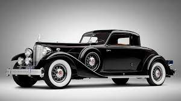

|  | Vintage Car Age: When Does a Car Become a Vintage Car?> Finally, there are what are called vintage cars. Vintage car age can vary greatly depending on where you are. What constitutes a vintage car depends on who’s defining it, but, as a rule of thumb, it’s a car that was built before 1930 (1925, by some definitions), so it’s a car from the very early days of motoring—except anything that has been modified into something like a hot rod.The vintage era in the automotive world was a time of transition. The car started off in 1919 as still something of a rarity, and ended up, in 1930, well on the way towards ubiquity. In fact, automobile production at the end of this period was not matched again until the 1950s. In the intervening years, most industrialized countries built nationwide road systems with the result that, towards the end of the period, the ability to negotiate unpaved roads was no longer a prime consideration of automotive design. Cars became much more practical, convenient and comfortable during this period. Car heating was introduced (progressing from hot bricks via double-skinned exhaust manifolds to the heater radiator matrix),[2] as was the in-car radio.[3] Four-wheel braking from a common foot pedal was introduced, as was the use of hydraulically actuated brakes.[4] |